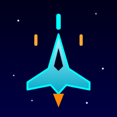
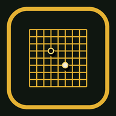
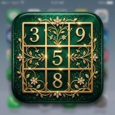
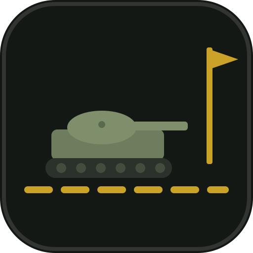

Offline spielbar
Als App installiert, ohne Internet
Gate Squad
Taktischer Tor-Shooter: Truppe durch Tore führen, Horden besiegen, Panzer knacken.

Vibe Squadron
Scroll-Shooter: Mutterschiff verteidigen, Flotte bauen, Türme und Waffen aufrüsten.

Go
Das klassische Brettspiel gegen den Computer – 9×9 oder 13×13, zwei Stärken.

Sudoku
Klassisches Sudoku in edlem Look – entspannt knobeln.

Frontline
Echtzeit-Strategie: FOB bauen, Ressourcen fördern, Konfliktzone halten – gegen den Computer.
Mario Craft
Blockwelt-Jump'n Run: laufen, springen, graben, explodierende Zischer, Dungeons und Bosse.
Online (Server nötig)
Multiplayer über das PHP-Backend